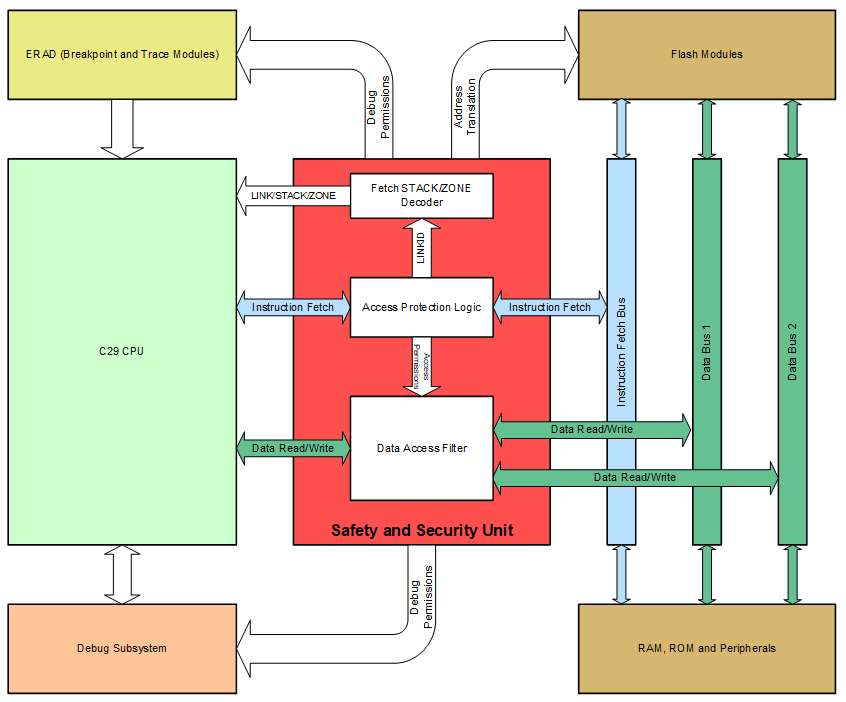
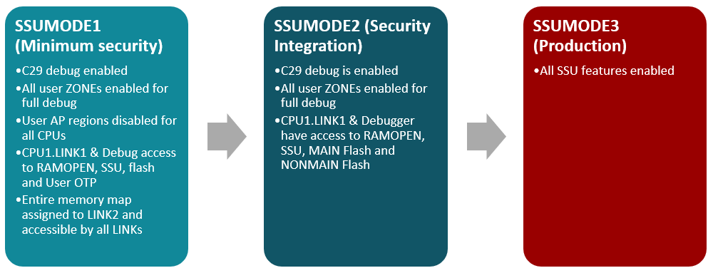

Safety and Security Unit (SSU)#
Overview#
In this module, you will:
Learn the principal roles the SSU plays in achieving system safety and security goals.
Learn the fundamental concepts used by the SSU.
Introduction#
The SSU is the principal module that is used to enforce run-time safety and security protections on the device. The SSU provides multiple functions:
Context-aware memory and peripheral protection (MPU) functionality, with dynamic permissions based on the currently executing code module or task.
Support for secure Flash updates, including Firmware Over-The-Air updates (FOTA) with A/B swapping
Multi-user debug security management.
Application of the SSU#
The SSU is essential to achieving most run-time safety and security system goals. Many systems require some form of memory protection unit, or MPU, which can restrict read or write access to various memory regions. The SSU enables this function, with the added advantage of dynamic context-sensitive protection. This means that instead of a software (RTOS) layer reconfiguring the MPU when switching to a new task, the SSU is able to dynamically apply protections based on which code is executing in the CPU. This enables safety and security without compromising real-time performance. Additionally, the SSU plays an important role in managing firmware update security, with the ability to restrict who and what code is allowed to program or erase the Flash. Additionally, the SSU enables multi-user debug authentication, making it possible for third parties to co-develop code on the same device while blocking access to host resources and sensitive secrets.
What is the SSU?#
The Safety and Security Unit (SSU) is at the heart of the F29x Real-Time Security architecture. This module is tightly coupled with the C29x CPU, providing a layer of security around every instruction fetch and every read or write transaction performed on a data bus. The SSU also integrates with the debug subsystem and ERAD, enforcing configured security restrictions on debug operations. Additionally, the SSU sits between the CPU and the Flash Controllers, performing address translation to route transactions to the correct Flash bank address and enabling firmware updates with A/B bank swapping.


Figure 1: SSU System Block Diagram#
Key SSU Concepts#
Access Protection Ranges (APRs)#
Access Protection Ranges (APRs) are the basic unit of memory protection in C29x devices. Each APR has a start address and end address that define the range of memory it covers. These addresses must be aligned to a 4KB boundary. An APR can be used to define a program code region, giving the CPU execute (instruction fetch) access and allowing the SSU to specify permissions for any code that executes from that region. An APR can also cover data memory or peripheral registers, with permissions specified on which code has read or write access to it. Each CPU has up to 64 APRs available. AP ranges must be exclusive and cannot overlap each other. Note that the first two APRs must be used when defining protections for external memory on the EMIF interface.
LINKs#
A LINK is a basic execution context. Each LINK ties one or more program code regions (APRs) into a specific execution context, enabling the SSU to specify access permissions for that context. The LINK associated with a code APR is specified by the APx_CFG.LINKID field, and the APx_CFG.XE (eXecute Enable) bit specifies whether the CPU is allowed to execute code from that region. Every program code region is associated with a single LINK, and its access permissions to any particular memory address are defined by the APR covering that memory address. These permissions are specified in the APR’s APx_ACCESS register. Each APR specifies unique permissions for every LINK. Each CPU has 16 LINKs. The SSU reserves the following special roles for the first three LINKs:
LINK0 is reserved for internal use, and cannot be configured by the user.
LINK1 is used for boot loaders, and can optionally be used for user code.
LINK2 is the primary user LINK. CPU1.LINK2 is the security root LINK (SROOT).
These three LINKs have special hard-coded permissions in the device in addition to APR-specified permissions. All other LINKs are secondary user LINKs that are available for user configuration.
LINKs form the basis for dynamic context-sensitive memory protection. The SSU can associate specific memory range permissions with specific program code through a LINK. It can thus automatically determine memory access permissions for every instruction without the need for a supervisory software layer or real-time operating system. This enables run-time safety and security without sacrificing real-time performance.
STACKs#
To further enhance run-time security and enable full code isolation between different CPU tasks, the C29x CPU supports up to 8 physical stack pointers. Each of these stack pointers is associated with a STACK ID that is specified by the SSU. Every STACK can contain one or more LINK(s); each LINK is associated with only one STACK. The C29x CPU requires the use of special gate instructions (LB.PROT, ENTRY.PROT/RET.PROT) to cross from one STACK to another. If an attempt is made to execute a new instruction that belongs to a different STACK without using these gate instructions, the CPU generates a fault. When crossing STACKs using a gate instruction, the CPU automatically erases registers to maintain data security between the different tasks.
The SSU reserves special roles for the first three STACKs:
STACK0 is reserved for internal use, and is only associated with LINK0.
STACK1 is only associated with LINK1.
STACK2 is the primary user STACK. It is always associated with LINK2, and can be associated with additional LINKs.
All other STACKs are secondary user STACKs that are available for user configuration.
ZONEs#
Each ZONE governs debugger access to the system, determining what permissions an external user or programmer has to download code, program Flash, or debug the system. While APRs, LINKs and STACKs are independently defined per CPU, ZONEs span the entire device (excluding the HSM, which is not governed by the SSU). Each device has a total of 4 ZONEs:
ZONE0 is reserved for internal use, and is only associated with STACK0/LINK0.
ZONE1 is the primary user ZONE. It is always associated with STACK1 and STACK2, and can be associated with additional STACKs.
ZONE2 and ZONE3 are available as secondary user ZONEs.
Each ZONE has three possible operating permission levels:
Full debug allowed: The debugger can control the CPU and access memories without restrictions.
Partial debug allowed: The debugger can control CPU execution, but access to memories is blocked.
Debug not allowed: The debugger has no access to CPU debug or memories.
By default, ZONE debug authorization happens by scanning in a password through the debug SEC-AP interface. Each ZONE has a full debug password and a partial debug password that is associated with it. The password that is scanned into the SEC-AP interface is matched with the configured passwords to determine which ZONE should be enabled for debug, and at what permission level. Multiple ZONEs can be simultaneously enabled for debug if required.
For a more secure alternative to password-based authorization, system designers can opt to implement challenge-response authorization using software. This type of authorization logic typically involves a cryptographic challenge, and can be performed directly by the HSM, or by C29x code accessing the cryptographic engines.
SSU Operation Modes#
The SSU has three modes of operation: SSUMODE1, SSUMODE2, and SSUMODE3.


Figure 2: SSU Operation Modes#
SSUMODE1#
Devices ship from the factory in SSUMODE1. In this mode, all debug permissions are fully enabled, and access protection regions are disabled for all CPUs. The entire memory map of the device (excluding ROM, hard-coded RAM and Flash regions and RAMOPENed bootloader memory) is mapped to LINK2. There are no restrictions on which code is permitted to update Flash memory. Since units are shipped in SSUMODE1, the user does not have to configure the SSU to begin developing code on the device. Security settings can be configured later, after the main code has been developed. However, take care not to erase the SECCFG sector without programming new settings in. If these settings are erased, the SSU goes to its most secure mode by default at boot, and everything is locked out!
SSUMODE2#
In SSUMODE2, APR, LINK and STACK protections become active. Debug permissions remain fully enabled, and Flash update permissions are unrestricted as long as there is AP access to the flash module registers. This mode is useful for testing and enabling run-time security, while retaining the ability to freely debug and update firmware.
SSUMODE3#
In SSUMODE3, all safety and security features of the SSU are enforced, including debug permissions. Boot loaders cannot RAMOPEN memory for exclusive access.
SSU Configuration#
Each Flash bank has two regions that contain information used to configure the SSU: SECCFG and BANKMGMT. These regions are separate from the MAIN Flash sectors, and do not count against the stated available Flash memory for application use. SECCFG contains the User Protection Policy (UPP), which consists of all the SSU configuration settings that are automatically loaded at device startup by the boot ROM. Most of these settings are locked by the boot ROM once configured, and cannot be changed by runtime software. The BANKMGMT sector is used to manage Flash updates when implementing Firmware-Over-The-Air (FOTA) or Live Firmware Update (LFU) with A/B bank swapping. This sector determines which bank is currently active and which is designated for background updates; it also contains version information for rollback control.
TI recommends using the SysConfig tool, available as part of the C29x SDK, to configure the SSU and generate user security settings. This tool provides an easy-to-use graphical user interface to create application security partitions and define protections, and automatically generates linker command files, the SECCFG image, and source code for inclusion into the user application. With the SysConfig security tool, you can allocate code sections, data sections and peripherals into LINKs and STACKs, and easily define access permissions and shared memory regions.
Test Your Knowledge!#
Question 1
How does the SSU prevent the CPU from executing code from a memory region?
Answer
Using the XE bit in the APx_CFG register for the access protection range covering the region.
Question 2
In what mode does the SSU enforce debug restrictions?
Answer
In SSUMODE3.
Question 3
On a factory-fresh device that has not been configured by the user for runtime security, what LINK does code run as by default?
Answer
Factory-fresh devices are in SSUMODE1. In this mode, all code runs as LINK2.
Summary#
The key takeaways from this learning module are:
The SSU is the heart of the F29x run-time security architecture. It manages memory and peripheral access protections, firmware updates, and debug security.
A LINK is a code execution context, defined by the memory ranges the code is stored in and executed from. Each LINK’s ID determines the security permissions for all code that belongs to it.
Access Protection Ranges, or APRs, are the basic unit of memory protection in the SSU. Each APR covers a specific memory range, and defines unique access permissions for each code LINK.
Each LINK belongs to one CPU STACK, and each STACK belongs to one debug ZONE.
The SSU has 3 modes of operation: SSUMODE1 (minimum security), SSUMODE2 (security integration), and SSUMODE3 (production with debug security).